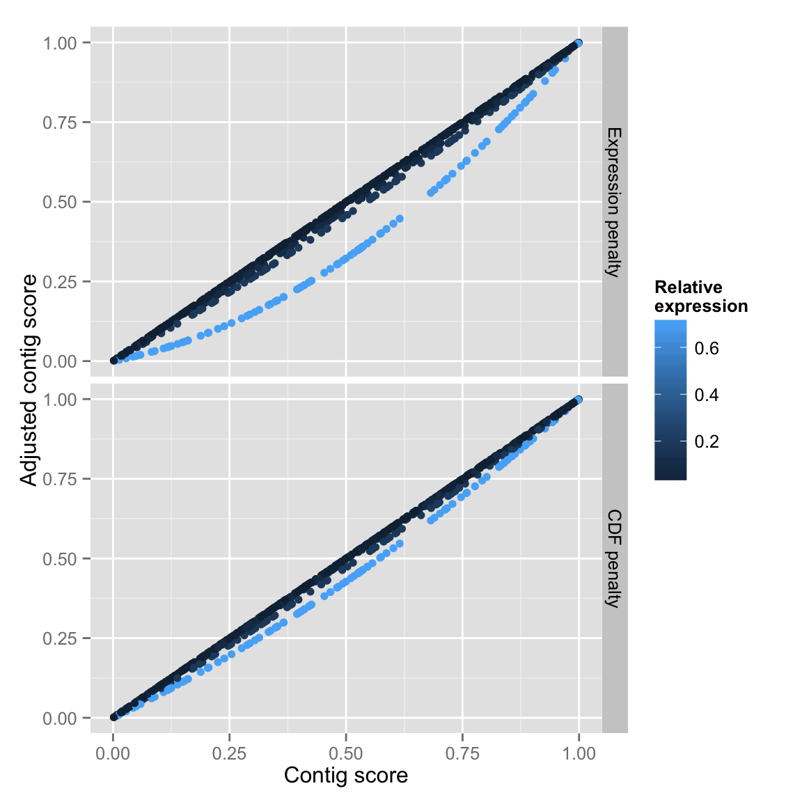

A feature of the current transrate contig score is that each contig is considered equal in its contribution to the assembly score. An alternative to equal weighting of contigs would account for the weight of evidence available for the assembly of the contig in the contig score. Here we develop such an expression-adjusted contig score by restating the contig score components in such a way that an expression-weighted penalty function can be applied to them.
The penalty should take the existing compositional error (raw) score and adjust it using some penalty function - we will thus define a penalty function \(s_{\phi}(C_{\mu})\) where \(s(C_{\mu})\) is a given contig score component. The penalty should penalise contigs that are highly expressed and poorly assembled, but never penalise contigs with low expression.
We can capture the ideal outcome in a table:
| Expression | Original score | Penalty | Adjusted score |
|---|---|---|---|
| low | high | none | high |
| low | medium | none | medium |
| low | low | none | low |
| medium | high | none | medium |
| medium | medium | low | medium |
| medium | low | medium | low |
| high | high | low | high |
| high | medium | medium | low |
| high | low | high | low |
The penalty must thus be proportional to the raw score, and to some function of the expression of the contig. We always want the score to remain between 0 and 1, so the penalty is constrained to the difference between the raw score and 1.
To enable applying a consistent penalty to each score component, we must first normalise the statement of the contig score components.
\[ s(C_{\text{nuc}}) = 1 - f(\rho_C)\ \frac{e_{rj}}{\hat{e}} \]
This modification seems relatively straightforward, since \(((C_{\text{nuc}}\) is defined subtractively — that is, we begin with a perfect score of \(1\), and reduce the score as compositional errors are encountered. However, not all of the contig scores are defined this way, and so some rearrangement is necessary for the others.
\[ s(C_{\text{cov}}) = 1 - f(\rho_C)\ u_{C} \]
where \(u_{C}\) is the fraction of contig \(C\) that is uncovered.
\[ s(C_{\text{ord}}) = 1 - f(\rho_C)\ \bar{o}_{C} \]
where \(\bar{o}_{C}\) is the fraction of incorrectly oriented reads mapping to contig \(C\). Finally,
\[ s(C_{\text{seg}}) = 1 - f((\rho_C))\ (1 - p_{\text{single}}) \]
where \(p_{\text{single}}\) is the probability that the coverage pattern of the contig is best descibed by \(1\) as opposed to \(2\) or more Dirichlet distributions.
We then construct the penalty \(s_{\phi}(C_{\mu})\) as:
\[ s_{\phi}(C_{\mu}) = \rho_C\ s(C_{\mu})\ (1 - s(C_{\mu})) \]
The penalty, which will be added to the contig score component, is thus relative to the contig expression weighting and to the score component value, and can achieve a maxmimum penalty of increasing the score component to \(1\).
Each contig score component is then expressed in adjusted form:
\[ \bar{s}(C_{\mu}) = 1 - s_{\phi}(C_{\mu})) + s(C_{\mu}) \]
The adjusted contig score \(\bar{s}_C\) is then the product of the adjusted contig score components
\[ \bar{s}(C) = \bar{s}(C_{nuc})\ \bar{s}(C_{cov})\ \bar{s}(C_{ord})\ \bar{s}(C_{seg}) \]
Here we consider two possible ways to define the contig expression weight \(\rho_C\)
The two possbilities are implemented below:
# \rho_C = \theta_C
# penalise by the relative abundance of the contig
penalise_by_expr <- function(txp_data) {
raw <- txp_data$raw_score
expr <- expr
dist <- (1 - raw)
penalty <- dist * raw * expr
return(1 - (raw + penalty))
}
# \rho_C = \text{cdf}(C)
# penalise by cumulative sum of contig relative abundance
penalise_by_cdf <- function(txp_data) {
raw <- txp_data$raw_score
cdf <- txp_data$cdf
dist <- (1 - raw)
penalty <- dist * raw * cdf
return(1 - (raw + penalty))
}We compare the adjusted contig score constructed using the two alternative implementations of \(\rho_C\) to the original transrate contig score, colouring the contigs by their relative abundace. It can be seen that both implementations achieve the desired effect, but that dominant contigs are penalised more in the first (relative expression based) implementation.
